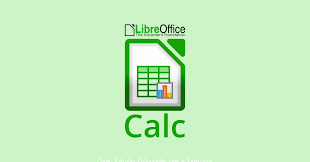

Calc permite almacenar, calcular y organizar información, se puede definir como un grupo de datos, normalmente numéricos, agrupados en tablas con filas y columnas. Dentro de calc podemos encontrar:
Writer permite diseñar y producir documentos de texto que contienen imágenes, tablas o diagramas. Estos documentos pueden guardarse en varios formatos como:
Volver a la página principal
